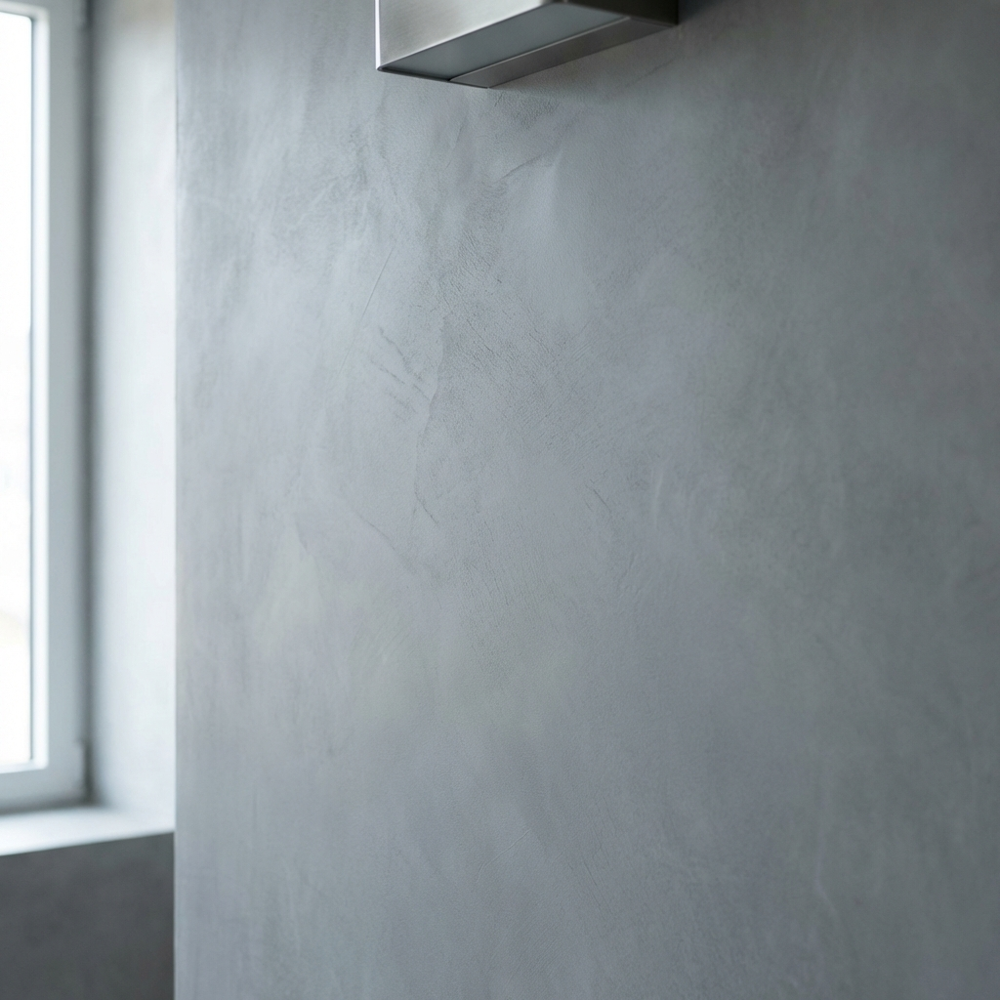
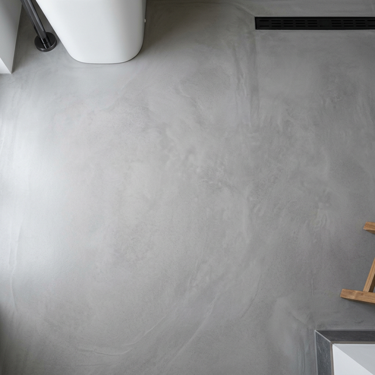
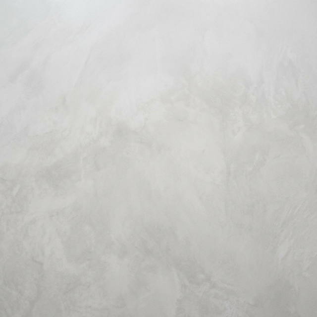
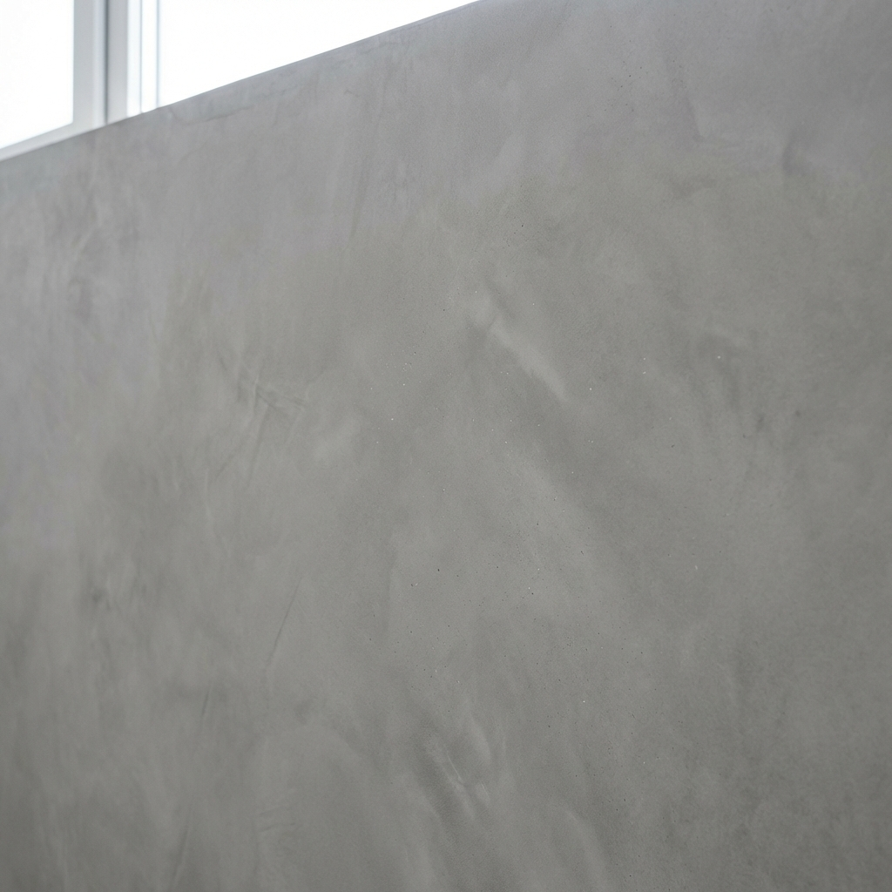
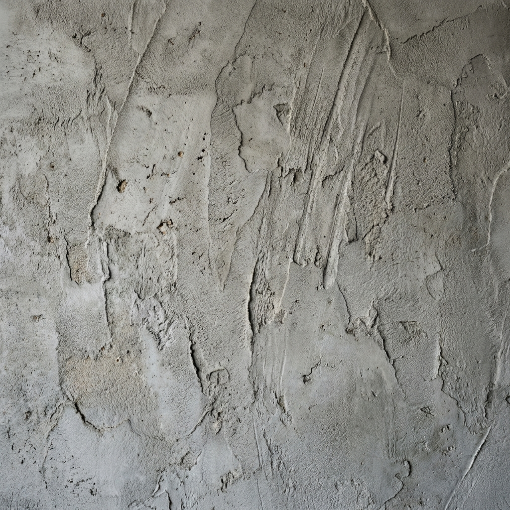

Our highest-grade architectural seamless coating. Engineered with imported European resins and pure mineral pigments, our 7-layer microcement system demands rigorous Level 5 Dustless Resurfacing preparation. Hand-applied by our guild artisans, it creates a waterproof, joint-free stone surface that defines the Quiet Luxury aesthetic.

A cement-based system suitable for walls and dry interior areas, offering controlled texture and a clean finish.

A multi-layer system with additional reinforcement for wet areas and floors. Requires substrate and moisture assessment.

Ultra-flat, zero-texture surface in light grey or off-white tones. Polished matte sheen with no grain or movement — the cleanest, most minimal expression of microcement for floors.
Best for residential floors, open-plan living areas, and minimalist interiors.
Light texture with a smooth, modern appearance. Subtle trowel marks add material depth while maintaining a refined look.

More pronounced movement with a raw, architectural feel. Suited for feature walls and commercial spaces.
Possibly — but it requires assessment. Tiles must be fully bonded, even, and free of grout height differences. Loose, hollow, or uneven tiles must be hacked first. We assess every substrate before confirming whether over-application is viable or whether hacking is required.
Yes, when properly specified. A waterproofing membrane must be applied beneath the microcement system in all wet areas — this is non-negotiable. Once sealed, the surface handles daily shower use and humidity well. It is not structurally waterproof on its own; the membrane does that job.
Yes. Our Smooth Seamless Floor finish uses a fine-grade microcement system applied with a steel trowel to achieve an ultra-flat, zero-texture surface in light grey or off-white tones. It reads as polished concrete but at a fraction of the thickness and weight. This finish works on both floors and walls.
When correctly applied and sealed, microcement floors in residential settings typically last 10–15 years before requiring a sealer maintenance coat. Walls, being lower-traffic, last longer. Durability depends heavily on substrate preparation and sealing quality — not the product alone.
More questions? Read our full FAQ or read our microcement guide.
A high-performance architectural coating demanding specialized artisan labor, imported European resins, and rigorous substrate preparation.
Includes: 7-layer artisan application, imported resins and mineral pigments, waterproofing membrane for wet zones, and commercial-grade sealers.
Excludes: Mandatory Level 5 Dustless Resurfacing prep (+S$1.50 - S$3.50/sqft) or hacking of unstable existing tiles.
All microcement installations require a mandatory onsite moisture and substrate assessment before application begins.